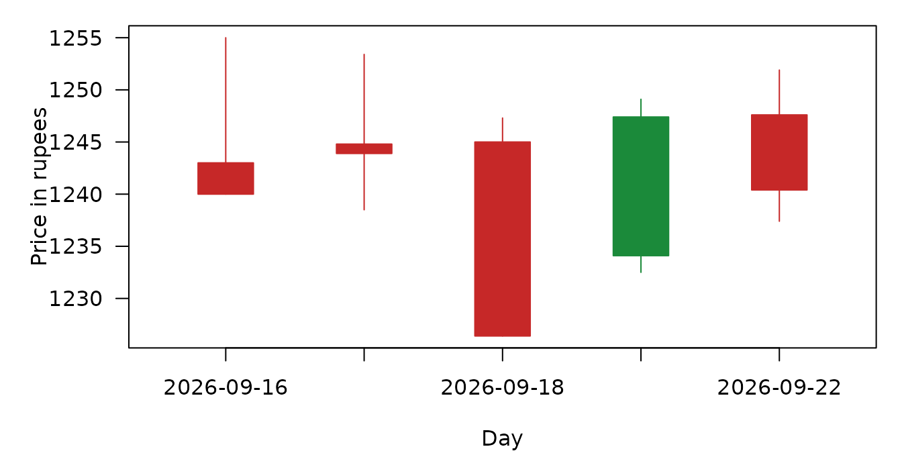

These members read prices: the candles an instrument has traded in,
its latest quote, and the order book behind that quote. Every instrument
has the candles and the quote, and every tradeable instrument also has
the order book, so an index has last_price but no
best_bid.
The table below lists every member on this page. Only
prices is a method, because it takes an interval and a
range; everything else is an active binding, read like a field with
$ and no parentheses.
| Kind | Member | Description |
|---|---|---|
| method | prices |
Candles for an interval and a date range, as a data frame |
| active binding | quote |
The full unified quote, as a named list |
| active binding | last_price |
The last traded price, as a number |
| active binding | ohlc |
The day’s open, high and low with the last and previous close |
| active binding | bids |
The buy side of the order book |
| active binding | offers |
The sell side of the order book |
| active binding | best_bid |
The highest bid |
| active binding | best_offer |
The lowest offer |
| active binding | bid_offer_spread |
The best offer minus the best bid, from one quote |
| active binding | mid_price |
Halfway between the best bid and the best offer, from one quote |
| active binding | volume_weighted_average_price |
Today’s volume weighted average price |
| active binding | last_quantity |
The size of the last trade |
| active binding | total_traded_volume |
The quantity traded so far today |
| active binding | open_interest |
The open interest of a future or an option |
| active binding | last_trade_time |
When the last trade happened, in India time |
The strings prices accepts for interval are
listed below. Vocabulary
has them too, beside every other plain string the package passes
through.
| Parameter | Values |
|---|---|
interval |
day, 1minute, 2minute,
3minute, 4minute, 5minute,
10minute, 15minute, 20minute,
25minute, 30minute, 45minute,
60minute, 120minute, 180minute,
240minute
|
Every read goes to UBI
Nothing on this page is cached. Each read of an active binding sends one request to UBI and returns what UBI answered at that moment, and the next read sends another. UBI runs on the same machine and answers from its own Redis, so a read is cheap, but it is never free, and two reads of the same binding can disagree because the market moved between them.
The animation below follows one read of last_price from
your code to UBI and back.

Orange dots carry the request out, and green dots carry UBI’s answer back. Every read of an active binding makes this whole trip.
Bind a value you need twice.
share$last_price looks like a field, but it is a
request. Code that uses the same value more than once should read it
into a local variable first, both to save the request and to be sure the
two uses see the same number.
The values that need two numbers from the same moment,
bid_offer_spread and mid_price, read one quote
and take both sides from it, rather than reading best_bid
and best_offer, which would be two requests and could mix
two moments.
prices
The method is called as
prices(interval = "day", from_date = NULL, to_date = NULL, days = NULL, adjusted = TRUE),
and it sends GET /api/instruments/prices.
This method fetches the instrument’s candles for one interval and one
range, in a single request however long the range is. Give either
from_date and to_date, or days.
The answer is a data.frame sorted by time, with the time
converted to India time, or NULL when UBI has no candles
for the range. It is documented on the reference page as Instrument$prices().
Parameters
The table below lists the method’s arguments.
| Name | Type | Required | Default | Description |
|---|---|---|---|---|
interval |
character | No | "day" |
The candle length, one of the intervals in the table above |
from_date |
Date, character or NULL
|
With to_date
|
NULL |
The first day, inclusive, as a Date or
YYYY-MM-DD
|
to_date |
Date, character or NULL
|
With from_date
|
NULL |
The last day, inclusive |
days |
integer or NULL
|
Instead of the two dates | NULL |
Count back this many days from today. UBI includes both ends, so
days = 10 covers eleven calendar days. |
adjusted |
logical | No | TRUE |
TRUE for prices adjusted for splits and bonuses, which
adds a price_factor column |
Example
The example below reads ten days of daily candles for RELIANCE and
then a day of five-minute candles. When the Python version was captured
from a local UBI on Saturday 2026-09-26, the daily call returned six
rows and eleven columns, and the five-minute call over the last day
returned nothing, because UBI had no five-minute candles stored for that
range; the R method returns NULL in that case.
reliance <- Equity$new(exchange = "nse", symbol = "RELIANCE")
daily <- reliance$prices(days = 10)
print(dim(daily))
print(head(daily, 5))
intraday <- reliance$prices(interval = "5minute", days = 1)
print(intraday)The chart below draws the first five daily candles from that capture, from 2026-09-16 to 2026-09-22. A green body closed above its open and a red body closed below it, and the thin line runs from the day’s low to its high.

The table below lists the same five candles as numbers, with the volume each day.
| Day | Open | High | Low | Close | Volume |
|---|---|---|---|---|---|
| 2026-09-16 | 1243.0 | 1255.0 | 1240.0 | 1240.0 | 10,023,997 |
| 2026-09-17 | 1244.8 | 1253.4 | 1238.5 | 1243.9 | 7,752,895 |
| 2026-09-18 | 1245.0 | 1247.3 | 1226.4 | 1226.4 | 15,122,715 |
| 2026-09-21 | 1234.1 | 1249.1 | 1232.5 | 1247.4 | 10,007,218 |
| 2026-09-22 | 1247.6 | 1251.9 | 1237.4 | 1240.4 | 10,684,376 |
Returns
A data.frame, or NULL when UBI has no
candles for the range. The table below lists its columns with their R
types.
| Column | Type | Description |
|---|---|---|
exchange |
character | The instrument’s exchange, added by this package |
segment |
character | The instrument’s segment, added by this package |
interval |
character | The interval asked for, added by this package |
datetime |
POSIXct in Asia/Kolkata
|
The candle’s start in India time. UBI calls this column
time and sends it in UTC; the package renames and converts
it, so a daily candle reads midnight India time rather than 18:30 the
day before. |
open |
numeric | The first price in the candle |
high |
numeric | The highest price |
low |
numeric | The lowest price |
close |
numeric | The last price |
volume |
numeric | The quantity traded, in underlying units |
oi |
numeric, or logical NA
|
Open interest for a future or an option, with NA where
UBI gave none; when no row has a value, as for a share, the whole column
is logical NA
|
price_factor |
numeric | The adjustment factor applied, present only when
adjusted = TRUE
|
Errors
The table below lists the conditions the method can signal.
| Condition | When |
|---|---|
BadRequestError |
The range or interval is invalid, such as both days and
from_date, or an intraday range longer than 366 days |
UnifiedBrokerInterfaceError |
Any other failure reported by, or on the way to, UBI |
Some families have no candles at all, so prices returns
NULL for every bond, currency pair, investment trust and
mutual fund. Asset classes lists which
classes have candles.
Under the hood.
The request carries instrument_id,
interval, adjusted as the text
true or false, and whichever of
from, to and days were given. UBI
answers with a columns list and a candles list
of rows. See Prices
on the UBI site for the route, including where the candles come from and
how adjustment works.
quote
The active binding is read as quote, and it sends
GET /api/instruments/quote.
This active binding returns the instrument’s full unified quote, which is UBI’s merged view of the latest price, the day’s figures and five levels of the order book. It is the source every order-book binding below reads from.
Example
The example below prints the quote for RELIANCE. When the Python
version was captured from a local UBI on Saturday 2026-09-26, the quote
held Friday’s closing figures, and its depth$buy was empty,
because nobody was bidding in the book the broker last reported; the
table under The order book values
shows the parts of that capture each binding reads.
str(reliance$quote)Returns
A named list holding UBI’s unified quote. The fields that matter most
are last_price, average_price,
ohlc, previous_close,
change_percent, volume, oi and
depth; broker names the broker the quote came
from, and source says whether UBI answered from its cache
(cache) or asked a broker while you waited
(broker). The
unified quote document on the UBI site describes every field. A JSON
null arrives as NULL inside the list, and a
JSON time is left as UBI sent it, in seconds since the epoch.
Errors
The table below lists the conditions reading the binding can signal.
| Condition | When |
|---|---|
ServiceUnavailableError |
UBI has no recent quote and no broker could supply one, which is always the case for a cash bond, a fixed income index and a mutual fund |
UnifiedBrokerInterfaceError |
Any other failure reported by, or on the way to, UBI |
last_price
The active binding is read as last_price, and it sends
GET /api/instruments/ltp.
This active binding returns the last traded price in rupees. It uses
UBI’s smaller ltp route rather than the full quote, and it
works on indices as well as on tradeable instruments.
Example
The example below reads the last price of RELIANCE and of the first MCX gold future. When the Python version was captured from a local UBI on 2026-09-26, the two prices were 1226.0 and 150734.0 rupees.
print(reliance$last_price)
expiries <- CommodityFutures$expiries(
exchange = "mcx",
underlying_symbol = "GOLD"
)
gold <- CommodityFutures$new(
exchange = "mcx",
underlying_symbol = "GOLD",
expiry_date = expiries[[1]]
)
print(gold$last_price)Errors
The table below lists the conditions reading the binding can signal.
| Condition | When |
|---|---|
ServiceUnavailableError |
UBI has no recent quote and no broker could supply one |
UnifiedBrokerInterfaceError |
Any other failure reported by, or on the way to, UBI |
ohlc
The active binding is read as ohlc, and it sends
GET /api/instruments/ohlc.
This active binding returns the day’s open, high and low, with the
last price and the previous close beside them. The inner
ohlc list has no close, because the day’s close is the last
price until the market shuts, so read last_price or
previous_close from the outer list instead.
Example
The example below prints the day’s figures for RELIANCE. When the
Python version was captured from a local UBI on 2026-09-26, the inner
ohlc held an open of 1210.5, a high of 1227.4 and a low of
1210.5, beside a last price of 1226.0, a previous close of 1219.2 and a
change of 0.5577 per cent.
Returns
A named list with last_price, ohlc (itself
a named list of open, high and
low), previous_close,
change_percent, last_trade_time,
received_at, source and the instrument’s
identity fields. On an index the inner values can all be
NULL; a check on 2026-09-22 before the open found
open, high and low all empty for
NIFTY.
Errors
The table below lists the conditions reading the binding can signal.
| Condition | When |
|---|---|
ServiceUnavailableError |
UBI has no recent quote and no broker could supply one |
UnifiedBrokerInterfaceError |
Any other failure reported by, or on the way to, UBI |
The order book values
The eleven active bindings in this section belong to TradeableInstrument,
so every class except the four index classes has them. Each one reads
the quote once and takes one part of
it, which means each read is one request to
GET /api/instruments/quote. None of them takes an argument,
and each signals UnifiedBrokerInterfaceError
or one of its subclasses when the quote cannot be read.
The table below shows where each binding comes from in the quote, and what the Python library’s capture on Saturday 2026-09-26 returned for RELIANCE, written as the R values the same answer gives.
| Active binding | Read from the quote | RELIANCE on 2026-09-26 |
|---|---|---|
bids |
depth$buy |
an empty list()
|
offers |
depth$sell |
one level: 11 orders for 855 shares at 1226.0 |
best_bid |
the first of depth$buy
|
NULL |
best_offer |
the first of depth$sell
|
the level with 11 orders for 855 shares at 1226.0 |
bid_offer_spread |
both sides of one quote | NULL |
mid_price |
both sides of one quote | NULL |
volume_weighted_average_price |
average_price |
1220.44 |
last_quantity |
last_quantity |
1, read from the quote itself because the binding was
not captured on its own |
total_traded_volume |
volume |
13138735 |
open_interest |
oi |
NULL, read from the quote itself; a share has no open
interest |
last_trade_time |
last_trade_time |
2026-09-25 15:59:50 India time |
An empty side makes three values
NULL.
The capture was taken on a Saturday, when the book the broker last
reported had sellers but no buyers. With bids empty,
best_bid is NULL, and so are
bid_offer_spread and mid_price, because both
need a best bid. Code that does arithmetic on these values must check
with is.null() first. The opposite surprise is possible
too: a check before the open on 2026-09-22 found a crossed book, with
the best bid 207.6 above the best offer, and
bid_offer_spread returned -207.6, because
neither binding checks the book for sense.
bids
The active binding is read as bids, and it sends
GET /api/instruments/quote.
This active binding returns the buy side of the order book, best
price first. It is a list of up to five named lists, each with
price, quantity and orders, and
it is an empty list when nobody is bidding.
Example
The example below prints the buy side. On 2026-09-26 the Python capture found it empty.
print(reliance$bids)offers
The active binding is read as offers, and it sends
GET /api/instruments/quote.
This active binding returns the sell side of the order book, best
price first. It is a list of up to five named lists, each with
price, quantity and orders, and
it is an empty list when nobody is offering.
Example
The example below prints the sell side. On 2026-09-26 the Python capture found one level, with 11 orders for 855 shares at 1226.0.
print(reliance$offers)best_bid
The active binding is read as best_bid, and it sends
GET /api/instruments/quote.
This active binding returns the highest bid as a named list with
price, quantity and orders, or
NULL when nobody is bidding.
Example
The example below prints the best bid. On 2026-09-26 the bid side was
empty, so the Python capture returned nothing, which R gives as
NULL.
print(reliance$best_bid)best_offer
The active binding is read as best_offer, and it sends
GET /api/instruments/quote.
This active binding returns the lowest offer as a named list with
price, quantity and orders, or
NULL when nobody is offering.
Example
The example below prints the best offer. On 2026-09-26 the Python capture returned the level with 11 orders for 855 shares at 1226.0.
print(reliance$best_offer)bid_offer_spread
The active binding is read as bid_offer_spread, and it
sends GET /api/instruments/quote.
This active binding returns the best offer’s price minus the best
bid’s price, in rupees, both taken from one quote. It is a number, or
NULL when either side of the book is empty, and it can be
negative when the book is crossed.
Example
The example below prints the spread. On 2026-09-26 the bid side was
empty, so the Python capture returned nothing, which R gives as
NULL.
print(reliance$bid_offer_spread)mid_price
The active binding is read as mid_price, and it sends
GET /api/instruments/quote.
This active binding returns the price halfway between the best bid
and the best offer, both taken from one quote. It is a number in rupees,
or NULL when either side of the book is empty.
Example
The example below prints the mid price. On 2026-09-26 the bid side
was empty, so the Python capture returned nothing, which R gives as
NULL.
print(reliance$mid_price)volume_weighted_average_price
The active binding is read as
volume_weighted_average_price, and it sends
GET /api/instruments/quote.
This active binding returns today’s volume weighted average price,
which is the quote’s average_price. It is a number in
rupees, or NULL when the broker serving the quote does not
report it, as happened for INFY before the open on 2026-09-22.
Example
The example below prints the volume weighted average price. On 2026-09-26 the Python capture returned 1220.44.
print(reliance$volume_weighted_average_price)last_quantity
The active binding is read as last_quantity, and it
sends GET /api/instruments/quote.
This active binding returns the size of the last trade as an integer
in underlying units, not lots, or NULL when it is unknown.
The quote captured on 2026-09-26 showed a last_quantity of
1 for RELIANCE; the binding itself was not read separately in that
capture.
total_traded_volume
The active binding is read as total_traded_volume, and
it sends GET /api/instruments/quote.
This active binding returns the quantity traded so far today, which
is the quote’s volume. It is an integer in underlying
units, not lots, or NULL when it is unknown.
Example
The example below prints the day’s volume. On 2026-09-26 the Python capture returned 13138735.
print(reliance$total_traded_volume)open_interest
The active binding is read as open_interest, and it
sends GET /api/instruments/quote.
This active binding returns the open interest of a future or an
option, which is the quote’s oi. It is an integer in
underlying units, or NULL for a security or when it is
unknown. The quote captured on 2026-09-26 had no oi for
RELIANCE, as expected for a share; the binding itself was not read
separately in that capture.
last_trade_time
The active binding is read as last_trade_time, and it
sends GET /api/instruments/quote.
This active binding returns when the last trade happened, as a
POSIXct in the Asia/Kolkata time zone. UBI
sends it as seconds since the epoch, and the binding converts it. It is
NULL when the broker does not send the time reliably.
Example
The example below prints the time of the last trade. The Python
capture on Saturday 2026-09-26 read a raw value of
1790332190.0, which is Friday 2026-09-25 at 15:59:50 India
time.
print(reliance$last_trade_time)Under the hood.
bids, offers,
volume_weighted_average_price, last_quantity,
total_traded_volume, open_interest and
last_trade_time each read self$quote once.
best_bid and best_offer read bids
or offers, which is still one quote.
bid_offer_spread and mid_price read
self$quote[["depth"]] once and take both sides from it. UBI
already drops empty levels from the depth, so the package does no
filtering of its own. See Quote
on the UBI site for the route and Where
a quote comes from for how UBI chooses between its cache and a
broker.